Después la propia competencia y la ley de mercado acabará derivando en una rebaja de los precios o en un sistema más justo para que no paguen justos por pecadores.
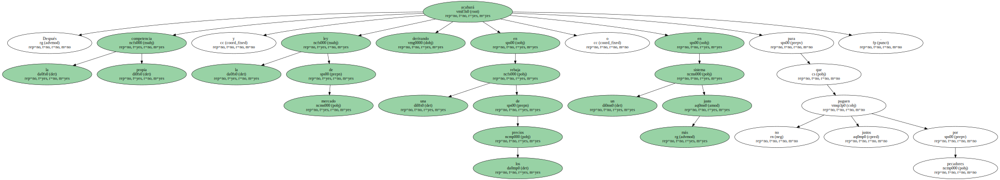La política exterior del Gobierno de Aznar ha oscilado entre la prepotencia y la impotencia.
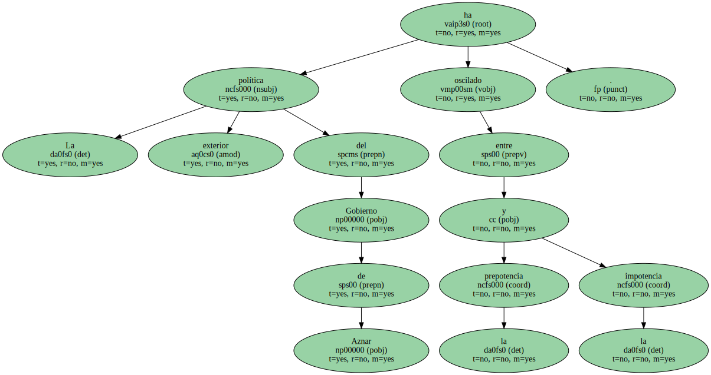Han fallado las formas diplomáticas y hay que cambiarlas una retirada a tiempo no siempre es una victoria , máxime cuando se estuvo predicando durante meses la guerra santa contra la pérfida Alemania y su manía de resistirse a mantener los fondos estructurales y de cohesión para España hasta pasado el 2006.
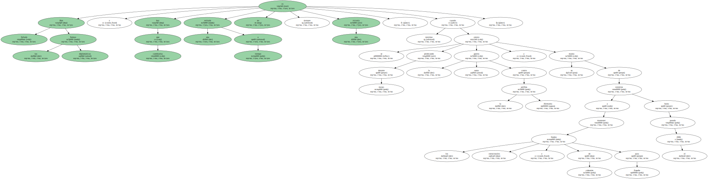El Gobierno español no ha tenido más remedio que rendirse a la evidencia y cancelar la batalla que le enfrentaba a casi todos los países de la Unión Europea , excepción hecha de Grecia y Portugal , por un asunto que nadie deseaba plantear con antelación y que tampoco se sabía muy bien por qué habría de resolverse ahora y no dentro de cuatro años.

El problema no era de fondos sino de forma.
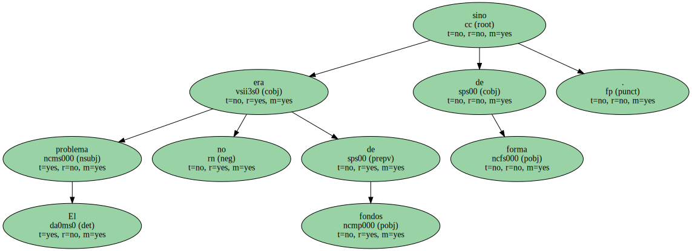O mejor , de formas.
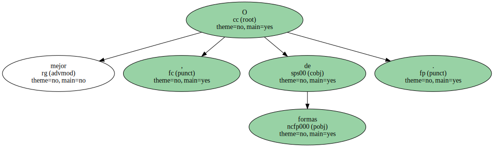El Gobierno español tenía razón en exigir que , por simple ingeniería estadística derivada de la ampliación , varias regiones ( Andalucía , Galicia , Extremadura ) no se quedaran sin los dichosos fondos ( casi un billón de pesetas anuales ).
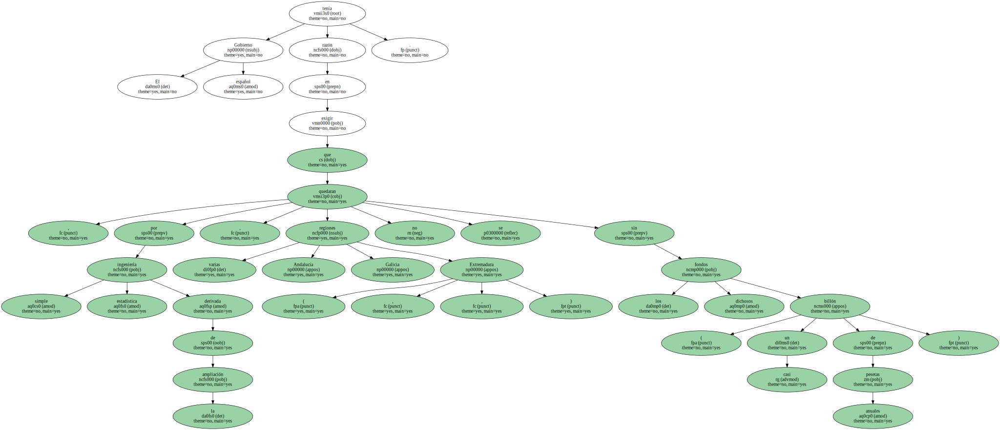Lo que FALLARON fueron las formas.
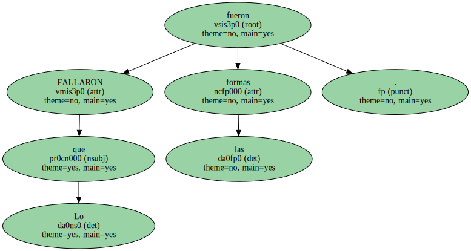El tono prepotente , a veces agresivo con que se gestionaron las ambiciones españolas y la exigencia abierta de un cambalache por la moratoria de siete años que Alemania exigía en la circulación de personas envenenó el asunto.
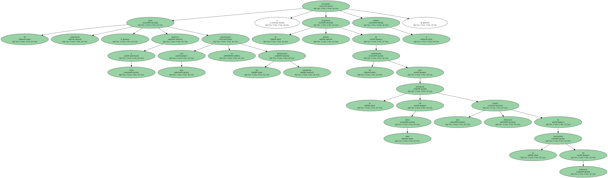Y mientras el Gobierno de Madrid llamaba inútilmente en puertas supuestamente amigas ( Francia fue un caso paradigmático ) , las otras puertas , las ajenas , se iban cerrando paulatinamente.
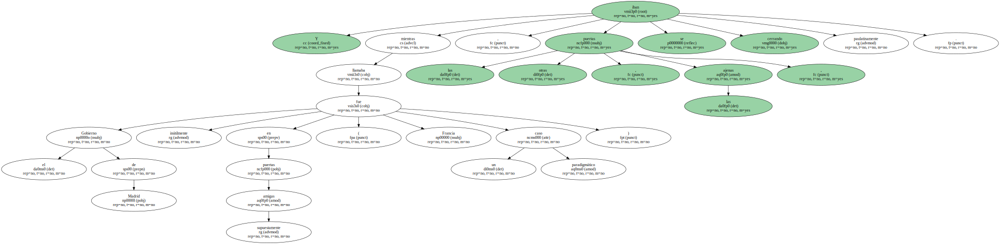España se quedó orgullosamente sola apenas respaldada por un Silvio Berlusconi recién llegado al cotarro europeo y que hace buena aquella frase del gitano : " No me defiendas , compadre ".
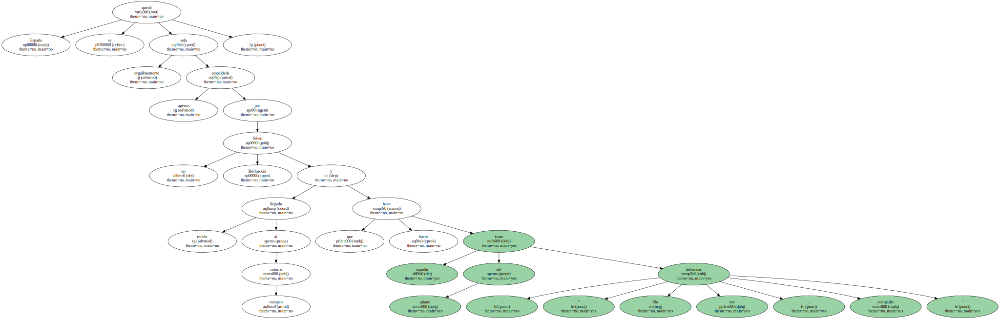En los últimos años se ha ido creando un tipo de comportamiento en política exterior que oscila entre la prepotencia y la impotencia.
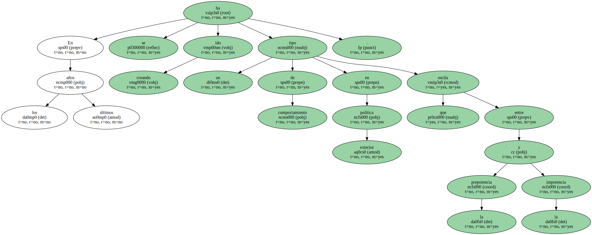Nuestros heraldos diplomáticos hinchan pecho ante los asuntos más arduos de la vida internacional , anuncian grandes proyectos , pontifican sobre cómo resolver el problema de Oriente Próximo , la deuda externa , los derechos humanos y la cuadratura del círculo para , finalmente , emitir una sarta de tópicos semejantes a las resoluciones del Parlamento Europeo o de la propia UE sobre las elecciones en Kazajstán o la trágica trifulca chechena.
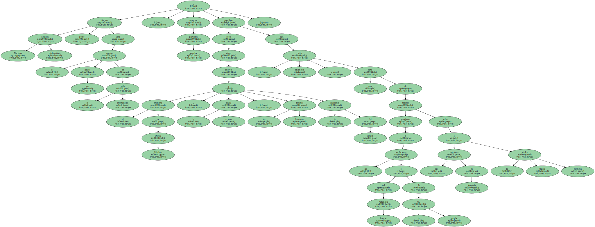Van a por todas : un día el ministro del ramo , Josep Piqué , saluda los esfuerzos del Gobierno argelino en el respeto a los derechos humanos y la democracia : lo hace oportunamente , cuando tres días antes el Ejército argelino ha disparado contra una manifestación en Tizi Uzú y deja un balance de un centenar de víctimas mortales.
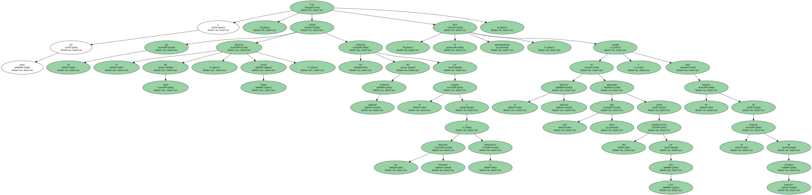Al otro día se desempolvan sonoros clarines para lanzar un plan para Lejano Oriente que será el asombro de Damasco o de Shanghái ante la sorpresa de los empresarios y de los representantes , héroes anónimos del catálogo y la comisión , inventores geniales del Chupa-Chups y de la fregona Vileda.
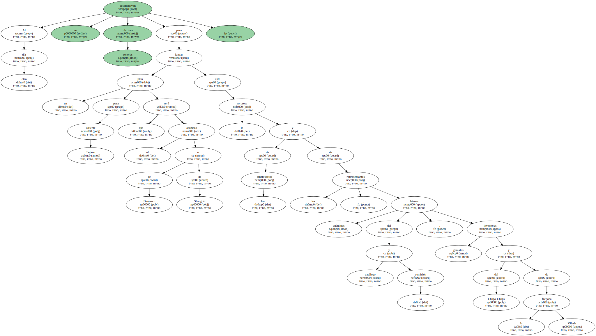Pero que el factor humano no falte : fines de semana en el parque natural de Doñana con Tony ( Blair ) y Abderramán ( Yusufi ) , excursiones mesetarias con Lionel ( Jospin ) y António ( Guterres ).
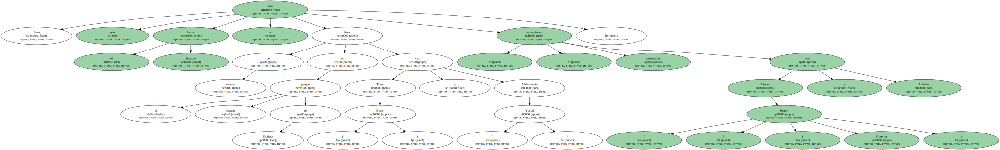Son amigos , un conocimiento , aunque Después no hay quien pesque una sardina en sus aguas turbias ni que en el momento de la verdad echen un cable en la cosa de los fondos y las políticas regionales : el gazpacho y el Ribera del Duero tienen una virtualidad limitada.
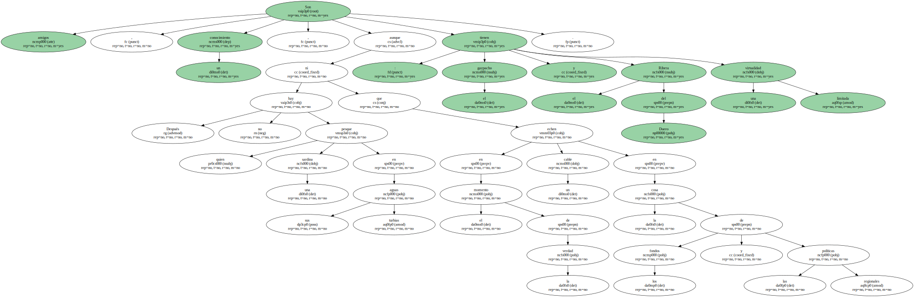O esos encuentros casi carnales con Vladimir Putin , enigmática sonrisa de polizonte , salvador de Chechenia y otros enclaves.
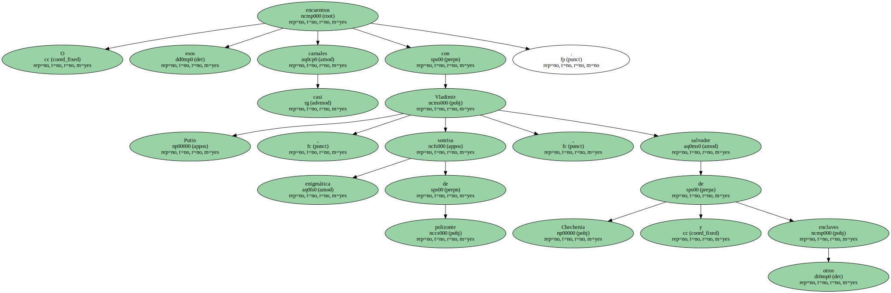Tantas efusiones ... ¿ Qué se hicieron ? ¿ para Qué sirvieron ?.
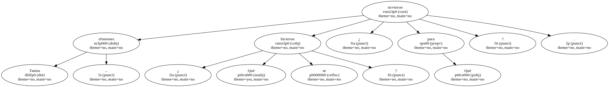Todo recuerda aquel histórico intercambio de corbatas con el dinosaurio cubano con resultados tan brillantes y espectaculares : yo muevo ficha si tú mueves ficha.
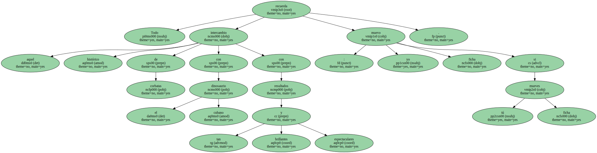En el ecuador del poder los señores primeros ministros sucumben aquí casi siempre a la tentación de " hacer el Kissinger " , una figura taurina de reconocida eficacia y diversión.
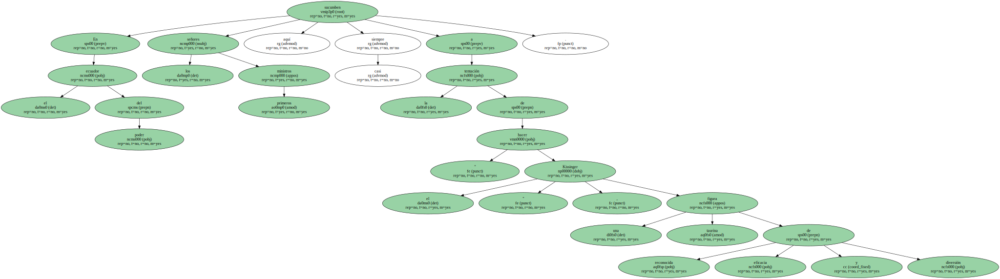El mundo ya no es ajeno aunque sigue siendo ancho.
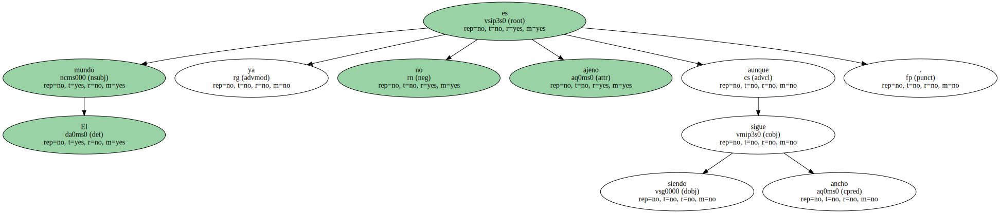Y todas las miradas convergen en la lucecita de la Moncloa porque de allí provienen la buena nueva y las buenas noticias.
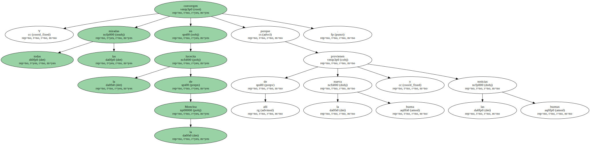Conviene que ahora , en plena apoteosis de pre-presidencia ( presidiremos la Unión Europea dentro de unos meses : rogativas y festejos son de rigor ) reflexionemos críticamente y nos hagamos un lifting metodológico.
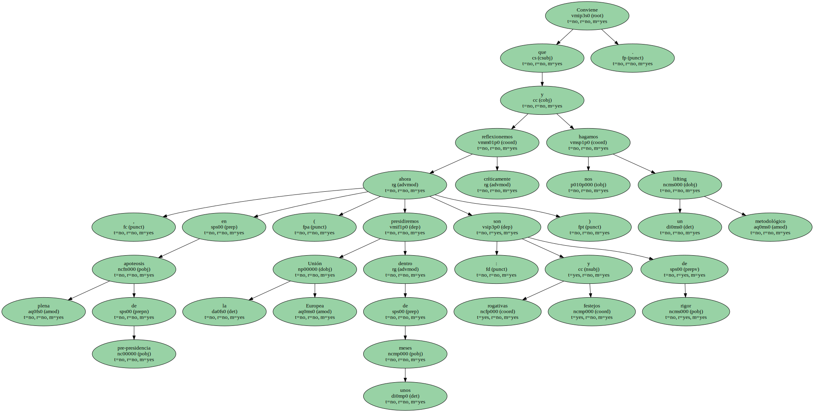Cambiar las formas parece de rigor , pero , en el fondo , el fondo no hay quien lo cambie.
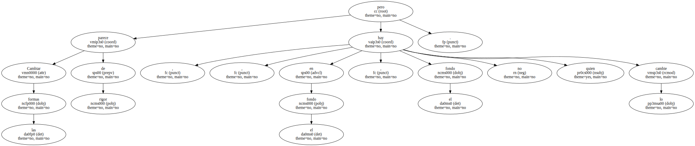